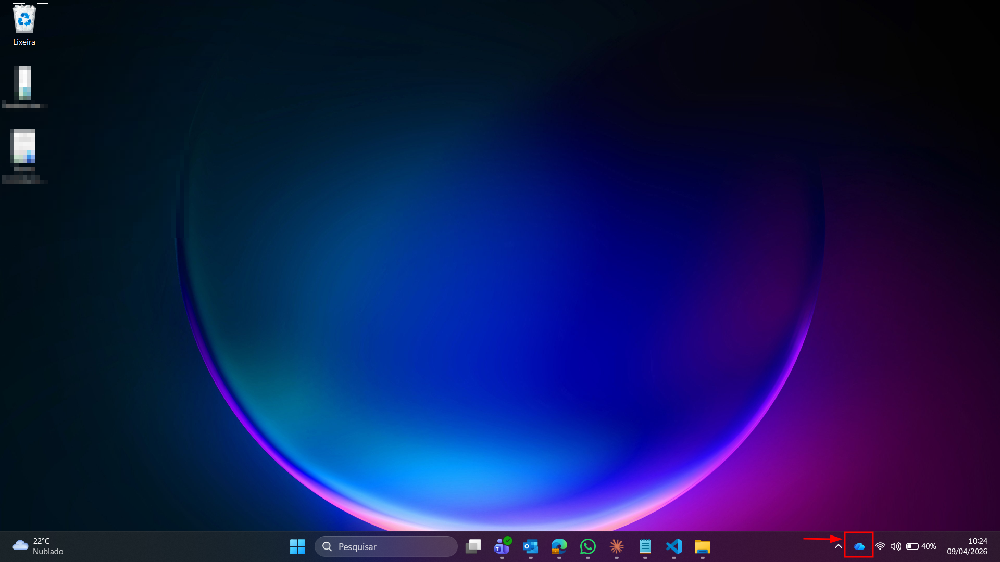
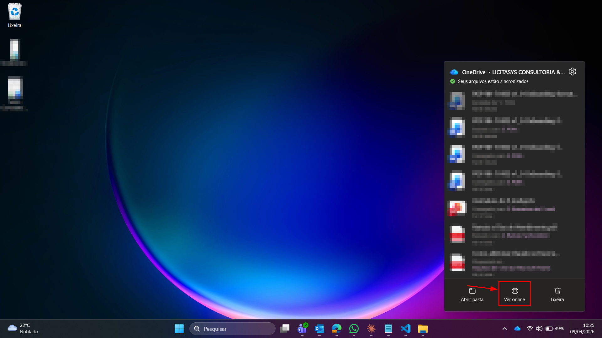
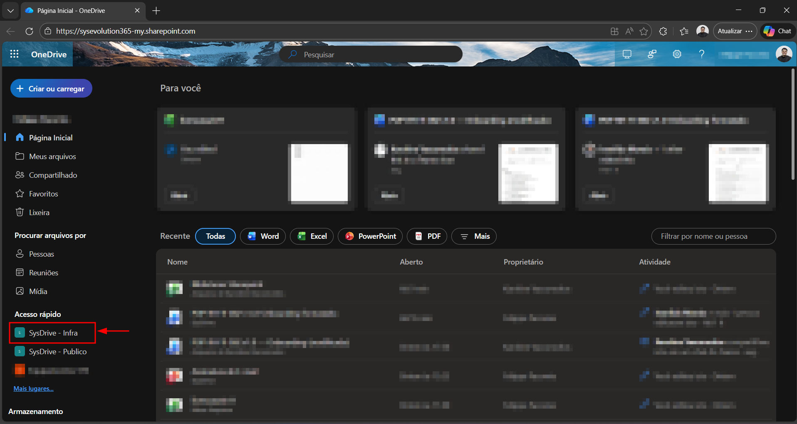
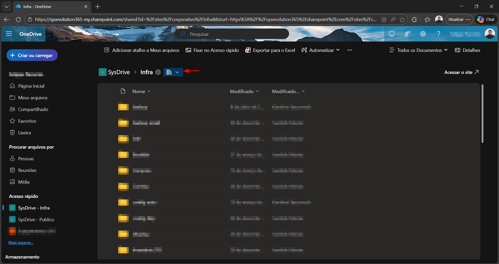
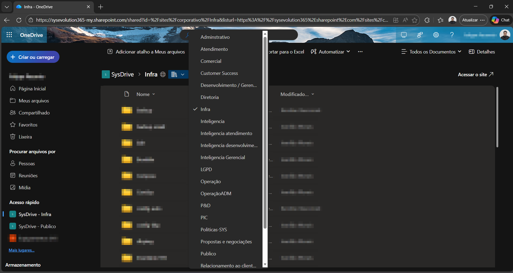
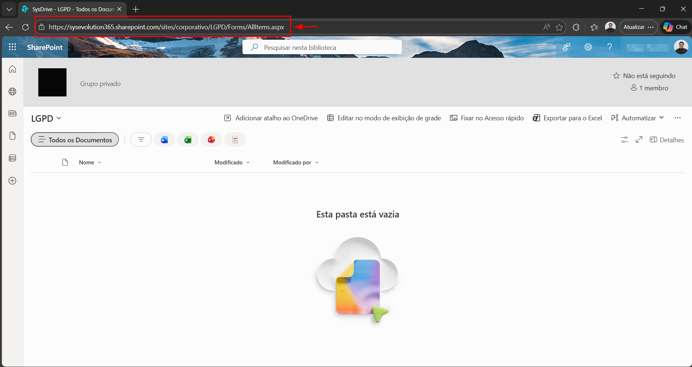

Como localizar os links das pastas
do SharePoint da Sys
Guia interno para agentes do Service Desk — colete URLs das pastas para enviar aos colaboradores.
Este guia detalha os passos para localizar os links das pastas do SharePoint. Com o link em mãos, você pode enviá-lo ao colaborador para que ele solicite ou acesse a pasta desejada. O processo é feito pelo OneDrive sincronizado no computador.
Abrir o OneDrive
No seu computador, localize o ícone do OneDrive (nuvem azul) na bandeja do sistema, próximo ao relógio. Caso não encontre, procure por "OneDrive" na barra de pesquisa do Windows.

Abrir o OneDrive no navegador
Um popup será exibido. Clique em "Ver Online" para abrir o OneDrive diretamente no navegador.

Acessar uma pasta pelo Acesso rápido
No canto inferior esquerdo do site, localize a seção "Acesso rápido" e clique em qualquer pasta à qual você tenha acesso.

Acessar a lista de pastas do SharePoint
Dentro da pasta, localize e clique sobre o ícone com fundo azul (ícone do SharePoint), conforme indicado na imagem. Isso abrirá a visualização de todas as pastas disponíveis no site do SharePoint.

Selecionar a pasta desejada
Uma lista com todas as pastas do SharePoint será exibida. Selecione a pasta da qual você deseja coletar o link.

Coletar o link na barra de URL
Com a pasta aberta, basta copiar o link exibido na barra de URL do seu navegador. Este é o link direto para a pasta no SharePoint.

Pronto!
Você coletou o link da pasta do SharePoint. Agora é só enviar o link ao colaborador para que ele possa solicitar ou acessar a pasta desejada.
📋 Observações
Em caso de dúvidas ou problemas durante o processo, entre em contato
com a equipe de Service Desk nos canais:


Também estamos disponíveis no Microsoft Teams.